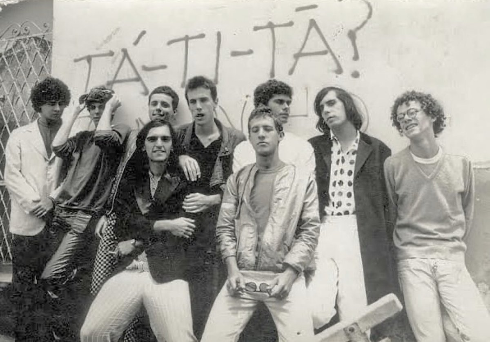
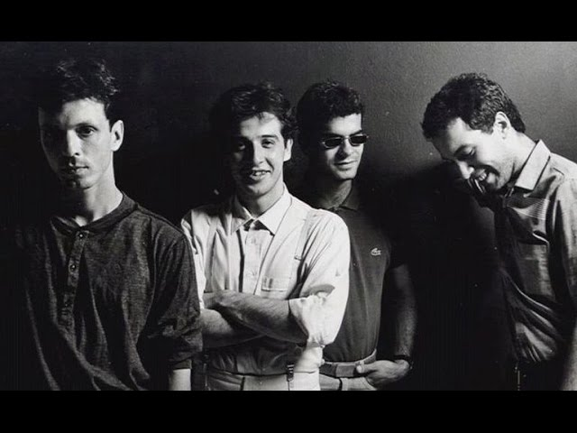
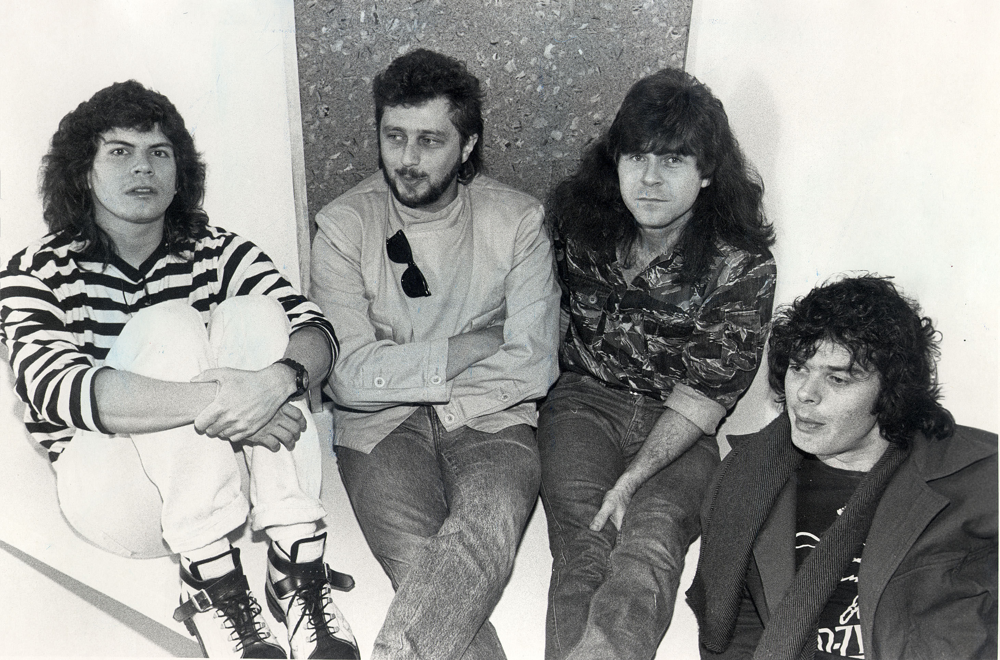
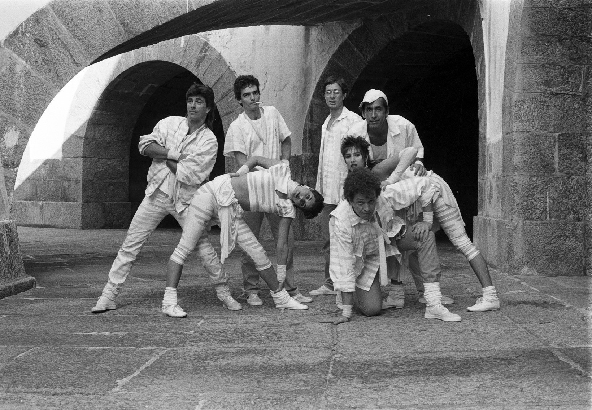

“Primeiramente quero informar que este SITE não tem como objetivo lucrar ou quaisquer outros fins, a construção do mesmo e parte de um exercício do curso de desenvolvimento de sites que estou fazendo”.
“A escolho do tema e tão somente que vivi (me desculpe é apenas a minha opinião sem desmerecer a de outros) a melhor década do Rock nacional. Durante a construção dele me diverti, me emocionei com as lembranças de momentos que esses artistas e suas incríveis musicais me proporcionaram, muito obrigado”. NS
Escolher as melhores bandas de rock brasileiras dos anos 80 não é uma tarefa nada fácil. A década trouxe grandes nomes, muitos deles que seguem firmes e fortes até hoje, e mesmo aqueles que não estão mais na ativa, inegavelmente marcaram época, em uma década de ouro para o rock nacional.
“Somos tão joveeeeens, tão joveeeeens”. Se você viveu os anos 1980 corretamente, com certeza se lembra dessa música e da Legião Urbana, uma das bandas brasileiras mais emblemáticas do período. Hoje, vamos te apresentar os sons de outros grupos que também marcaram o rock nacional nos anos 80 e 90.
No livro Brock: o rock brasileiro dos anos 80, o jornalista Arthur Dapieve comenta que “o rock penou quase três décadas até conseguir, de fato e de direito, a cidadania brasileira”. Isso porque a década de 80 é considerada a de ouro para o gênero no Brasil.
Legião Urbana

Legião Urbana é uma banda fundada em 1982 em Brasília, Distrito Federal, por Renato Russo e Marcelo Bonfá. O grupo também contou com Dado Villa-Lobos e Renato Rocha em sua formação mais conhecida. Diante da morte de Renato Russo em 11 de outubro de 1996, o grupo encerrou suas atividades onze dias depois. Possui uma discografia de oito álbuns de estúdio, três compilações e cinco álbuns ao vivo (um deles sem a presença de Renato Russo).
Em 2015, O Estado de S. Paulo afirmou que a banda vendeu 25 milhões de cópias em seus catorze anos de atividade. É o segundo grupo musical brasileiro que mais vendeu discos de catálogo no mundo. A banda tem muitas músicas famosas como “Será”, “Ainda É Cedo”, “Por Enquanto”, “Geração Coca-Cola”, “Eduardo e Mônica”, “Índios”, “Quase Sem Querer”, “Faroeste Caboclo” e “Que País É Este”, várias com letras críticas e engajadas politicamente.
Titãs
Nove pessoas em uma banda, é possível? E seis vocalistas? Para o Titãs, sim!
Titãs nasceu no início da década de 1980, em São Paulo. A estreia oficial da banda, na época chamada de Titãs do Iê-Iê, aconteceu em 1982, em um show no Sesc Pompeia. A formação do grupo não era nada comum, tinha nove integrantes: Arnaldo Antunes, Branco Mello e Ciro Pessoa cantavam e eram backing vocals. Sérgio Britto, Nando Reis e Paulo Miklos também cantavam, mas revezavam no baixo e nos teclados. Os outros três integrantes eram André Jung, baterista, Tony Belloto na guitarra solo e Marcelo Fromer na guitarra rítmica.
A consolidação do grupo no mundo da música aconteceu com o lançamento do terceiro disco, produzido por Liminha, uma referência na produção musical, chamado “Cabeça Dinossauro” (1986) com uma estética totalmente diferente das obras anteriores. Com as faixas “Bichos Escrotos”, “AA UU”, “O Quê”, “Homem Primata”, “Família” e “Polícia”, o álbum é até hoje considerado um dos mais importantes da história do rock brasileiro. Cabeça Dinossauro se tornou uma referência musical do rock nacional anos 80 e 90, ainda que tenha demorado um pouco para conquistar os fãs. Cerca de 30 anos depois, o álbum foi relançado e remasterizado como álbum duplo – é imperdível!
Contudo o sucesso em vendas ficou por conta do álbum gravado no projeto Acústico MTV, em comemoração aos 15 anos da banda – foram vendidas 1,7 milhão de cópias.
Não demorou muito para que Jung saísse da banda; foi então que Charles Gavin chegou para ficar.
Só em 1992 a banda começou a perder outros membros: Arnaldo Antunes e Nando Reis resolveram seguir carreira solo; em 2001, Fromer faleceu em um acidente; em 2010 foi a hora de Charles Gavin anunciar a saída do grupo; por fim, em 2016, Paulo Miklos oficializou o desligamento.
Banda ganhou 37 prêmios, entre eles um Grammy Latino. Fonte: Tenho Mais Discos que Amigos/Reprodução.
Atualmente, a banda segue na estrada, mas com apenas três integrantes oficiais, sendo eles Branco Mello (vocal), Sérgio Britto (vocal e teclado) e Tony Bellotto (guitarra e violão), além de dois músicos de apoio, Mario Fabre (bateria) e Beto Lee (guitarra e vocal de apoio).
Barão Vermelho

Barão Vermelho é uma banda de rock brasileiro fundada em 1981, na cidade do Rio de Janeiro. Sua formação inicial foi Guto Goffi, Maurício Barros, Dé, Frejat e Cazuza. Em formações posteriores contou com Peninha, Fernando Magalhães, Dadi Carvalho e também Rodrigo Santos.
Em 1982, o primeiro álbum do quinteto estava lançado: Barão Vermelho. Gravado em apenas quatro dias, o disco contou com hits que são lembrados até hoje dentre os clássicos do rock nacional anos 80 e 90, como “Todo Amor Que Houver Nessa Vida”, “Pro Dia Nascer Feliz”, “Bete Balanço”, “Maior Abandonado” e “Por Você”. e conta com 13 álbuns.
O sonho de ter a própria banda de rock'n roll brotou no coração do baterista Guto Goffi e do tecladista Maurício Barro após assistirem a um show do Queen no estádio do Morumbi, em São Paulo.
O nome escolhido foi Barão Vermelho, o codinome do aviador alemão Manfred von Richthofen, um dos principais inimigos dos Aliados durante a Primeira Guerra Mundial.
Não demorou muito para que Dé (baixo) e Frejat (guitarra) se juntassem aos dois. Sem vocalista, por indicação de uma amiga, a banda conheceu Léo Guanabara, o Léo Jaime.
Com um timbre de voz suave, Léo não estava muito alinhado com a proposta do grupo. Compreendeu a situação e indicou um tal de Cazuza.
Três anos depois, Cazuza deixou o grupo para seguir carreira solo, e o vocal passou a ser integralmente de Frejat.
Cazuza faleceu em 1990, por decorrência da AIDS; ele tinha apenas 32 anos.
Em 1988, com o lançamento do álbum Carnaval. A música Pense e Dance foi sucesso na novela Vale Tudo, e o disco estourou nas rádios do país.
Em janeiro de 2017, após diversas mudanças entre os integrantes nos anos anteriores, a banda voltou aos palcos. Agora, quem está no controle do microfone principal do grupo é Rodrigo Suricato.
O Barão Vermelho integra o chamado quarteto mais influente do rock dos anos 80, ao lado dos Titãs, da Legião Urbana e dos Paralamas do Sucesso.
Os Paralamas do Sucesso

A banda surgiu de uma união entre amigos que viviam na capital brasileira, Brasília, em 1981. No ano seguinte, a então nomeada As Cadeirinhas da Vovó passaria a se chamar Os Paralamas do Sucesso – só que no Rio de Janeiro.
Inicialmente, era composta por Herbert Vianna, Bi Ribeiro e Vital Dias. Porém, naquela época, Vital não compareceu em uma apresentação e foi substituído por João Barone, que nunca mais deixou o grupo. Se você fica impressionado com a rotação de integrantes de uma banda, Os Paralamas do Sucesso vai te tranquilizar. Desde 1982, a formação é a mesma: Herbert Vianna (guitarra e vocal), Bi Ribeiro (baixo) e João Barone (bateria).
A demo de “Vital e Sua Moto”, em referência a Vital Dias, um baterista anterior à chegada de João Barone, foi enviada para a Fluminense FM. No verão do ano seguinte, a música era uma das mais tocadas na rádio.
Não demorou muito para que o trio fosse notado. Após abrir um show do Lulu Santos, eles assinaram com a EMI e lançaram o primeiro disco: Cinema Mudo. Contudo, é o segundo álbum, intitulado O Passo do Lui, que traz hits que demonstram a atemporalidade do grupo, expressa em canções como Óculos, Me Liga, Meu Erro, Romance Ideal e Ska.
Por causa de O Passo do Lui, Os Paralamas do Sucesso foram convidados a tocar no Rock in Rio de 1985.
O fortalecimento do grupo no mundo da música aconteceu com o lançamento do terceiro álbum, chamado “Selvagem?” (1986). As músicas “A Novidade” (parceria com Gilberto Gil), “Alagados” e “Melô do Marinheiro”, fizeram com que o disco vendesse 700 mil cópias.
De lá para cá, treze álbuns foram lançados. O último, Sinais do Sim, saiu em agosto de 2017 pela Universal Music e é um dos maiores sucessos não só do rock nacional anos 80 e 90, mas da atualidade.
A banda conta ainda com três músicos de apoio em suas turnês: João Fera (teclado), Monteiro Jr. (saxofone) e Bidu Cordeiro (trombone).
Capital Inicial

Outra formação que ocupa, com louvor, nossa lista das melhores bandas de rock brasileiras dos anos 80 é o Capital Inicial. O grupo surgiu da divisão do Aborto Elétrico, que também originou a Legião Urbana.
Formada pelo vocalista Dinho Ouro Preto, pelos irmãos Fê (baterista) e Flávio Lemos (baixista) e Yves Passarell (guitarrista), o Capital lançou o álbum homônimo de estreia em 1986, com faixas icônicas como Fátima e Música Urbana.
A banda continua firme com o seu rock and roll e já tem 14 álbuns lançados.
Ira
É uma banda brasileira de rock, formada em 1981, na cidade de São Paulo,Continua na estrada com os integrantes Nasi, Edgard Scandurra, Evaristo Pádua e Johnny Boy. Donos de alguns dos maiores clássicos da história do rock nacional, como Núcleo Base, Mudança de Comportamento, Tolices, Envelheço na Cidade, Dias de Luta, Tarde Vazia, O Girassol, Eu Quero Sempre Mais e Flores em Você, tema de abertura da novela O Outro, da Rede Globo em 1987. A banda tem seu nome inspirado no Exército Republicano Irlandês (do inglês Irish Republican Army).
Engenheiros do Hawaii

Amada por muitos, odiada por tantos outros, outra banda que marcou o rock nacional Engenheiros do Hawaii, formada em 11 de janeiro de 1985 na cidade de Porto Alegre por Humberto Gessinger (vocal e baixo), Carlos Stein (guitarra), Marcelo Pitz (baixo) e Carlos Maltz (bateria), que alcançou grande popularidade com suas canções líricas e críticas. O nome da banda se deve ao fato que foi formada por quatro estudantes da Faculdade de Arquitetura que o colocaram para satirizar os estudantes de engenharia que andavam com bermudas de surfista, com quem tinham uma certa rivalidade.
Em 1986, mas sem a presença de Carlos Stein, sai o primeiro álbum do grupo: Longe Demais das Capitais. Nas faixas, é evidente a influência de The Police e Os Paralamas do Sucesso. Com vasto repertório canções de cunho político, mas também baladas românticas. Seus maiores singles sao “Toda Forma de Poder”, “Segurança”, “Infinita Highway”, “Terra de Gigantes”, “Somos Quem Podemos Ser”, “O Papa é Pop” “Era um Garoto que Como Eu Amava os Beatles e os Rolling Stones”, “Pra Ser Sincero”, “O Exército de um Homem Só” e “Piano Bar”.
Foi o single Toda Forma Poder que apresentou a banda aos brasileiros, mas é o segundo álbum, A Revolta dos Dândis, repleto de composições existencialistas (Gessinger é um grande fã dos filósofos Albert Camus e Jean-Paul Sartre), que realmente merece destaque.
Dentre todos os integrantes que já passaram pela banda, Humberto Gessinger foi o único que se manteve fiel até a última turnê, realizada em 2008. E desde 2013, Humberto Gessinger segue carreira solo.
O fato é que ouvir Engenheiros do Hawaii é sempre passear em um mundo de genialidade e muita sonoridade.
Biquini Cavadão

Biquini Cavadão é uma banda de rock brasileira formada em 1985 no Rio de Janeiro. Composto por Bruno Gouveia, Carlos Coelho, Miguel Flores da Cunha e Álvaro “Birita” Lopes. A banda fez parte da segunda geração de bandas dos anos 1980.
Seus maiores singles são “Vento Ventania”, “Quando Eu Te Encontrar”, “Quanto Tempo Demora Um Mês”, “Dani/Uma Brasileira”, “Vento Ventania”, “Impossível”, “Timidez”, “Tédio”, “Vou Te Levar Comigo” e “Zé Ninguém”.
Ultraje a Rigor

Ultraje a Rigor é uma banda brasileira de rock, criada no início da década de 1980 em São Paulo. Idealizada por Roger Moreira (voz e guitarra base), obteve sucesso em 1983 no Brasil, devido às canções “Inútil” e “Mim Quer Tocar”. Em 1985 a banda ficou nacionalmente conhecida pelo álbum Nós Vamos Invadir sua Praia que trouxe o primeiro disco de ouro e platina para o rock nacional.
Sua formação inicial era Roger, Leonardo Galasso (bateria, mais conhecido como Leôspa), Sílvio (baixo) e Edgard Scandurra (guitarra solo). Hoje, apenas Roger, idealizador da banda, continua desde a formação original.
RPM
RPM (sigla de Revoluções por Minuto) é uma banda de rock brasileira, formada em 1983, tendo sido uma das mais populares do país nos anos de 1984 a 1987. Seus maiores singles/hits foram “Olhar 43”, “A Cruz e A Espada” e a “Revoluções por Minuto”, “Louras Geladas”, “Rádio Pirata”, “Alvorada Voraz” e “Vida Real”.
O RPM foi uma das bandas mais bem sucedidas da história da música brasileira. Na segunda metade dos anos 80, o grupo conseguiu bater todos os recordes de vendagens da indústria fonográfica brasileira.
Nenhum de Nós

Nenhum de Nós é uma banda de rock brasileira, formada em 1986 na cidade de Porto Alegre, no estado do Rio Grande do Sul, a banda foi formada pelos músicos Thedy Corrêa, Carlos Stein, Sady Homrich, Veco Marques e João Vicenti. Em 1988, a música de trabalho do primeiro disco, Camila, Camila torna-se um hit nacional, chegando ao 3° lugar na parada brasileira.
Os maiores singles da banda são “Camila, Camila”, “O Astronauta de Mármore”, “Você Vai Lembrar de Mim”, “Igual a Você” e “Amanhã ou Depois”.
Roupa Nova

Roupa Nova é um conjunto musical de Pop Rock/soft, formado no Rio de Janeiro em 1980 por Cleberson Horsth (teclados e voz), Ricardo Feghali (teclados e voz), Kiko (guitarra e voz), Nando Oliveira (baixo e voz), Serginho Herval (bateria e voz) e Paulinho (voz e percussão). O grupo está ativo até hoje.
Diversas canções do grupo integraram trilhas sonoras nas telenovelas brasileiras e se tornaram grandes êxitos comerciais como “Anjo”, em “Guerra dos Sexos” (1983), “Dona”, em “Roque Santeiro” (1985), e “Whisky A-Go-Go”, em “Um Sonho a Mais” (também em 1985).
Blitz
É uma banda de rock brasileira precursoras do chamado “BRock”. O grupo foi formado na cidade do Rio de Janeiro em 1982. Originalmente foi formado por Evandro Mesquita (voz e guitarra), Fernanda Abreu (backing vocal), Marcia Bulcão (backing vocal), Ricardo Barreto (guitarra), Antônio Pedro Fortuna (baixo), Billy Forghieri (teclados) e Lobão (bateria).
Os singles da banda são “Você Não Soube Me Amar”, “Mais Uma de Amor (Geme Geme)”, “Dois Passos do Paraíso”, “Betty Frígida” e “Weekend”.
Com seu som bastante peculiar, a banda, trazendo aos palcos uma mistura de rock e new wave. também considerada uma das melhores bandas de rock brasileiras dos anos 80, tem seis álbuns lançados.
Kid Abelha

Com Paula Toller nos vocais, o Kid Abelha tinha também em sua formação Bruno Fortunato na guitarra e George Israel no saxofone. A banda, surgida em 1981, e que já contou com Leoni e outros membros, ficou na ativa até 2016, lançou 13 álbuns e vendeu mais de 9 milhões de discos.
Dentre seus grandes sucessos, estão Pintura Íntima (“Fazer amor de madrugada, Amor com jeito de virada”), Como Eu Quero e Fixação.